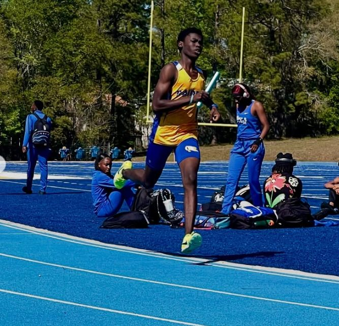
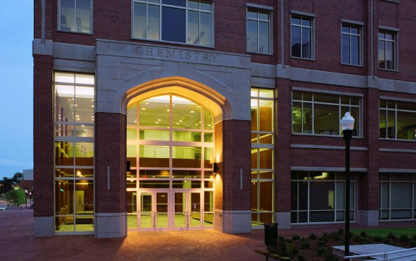

01 / school
IB Student at Rickards
James S. Rickards High School, Tallahassee. IB coursework gives the page its academic base: long assignments, hard questions, and learning to stay patient with complicated work.
Experiences
School, research curiosity, sport, and building all sit in the same place for me: practice, observation, and trying to make useful things with care.



James S. Rickards High School, Tallahassee. IB coursework gives the page its academic base: long assignments, hard questions, and learning to stay patient with complicated work.

Interested in how lab questions become materials, energy ideas, and real-world engineering decisions. This is the direction I want to keep building toward as I get more lab exposure.
Build it small. Make it useful. Make it cleaner tomorrow.

800m, mile, and 5K training. Running keeps the work honest because progress has nowhere to hide, and every week leaves evidence.
CivilSense, CrashLab, OlympiadCoach, SmartPlace, and this site. Different forms, same instinct: make ideas easier to understand and use.